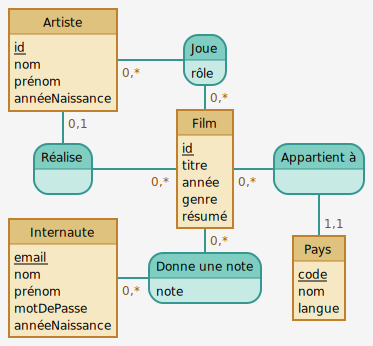
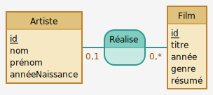
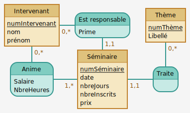
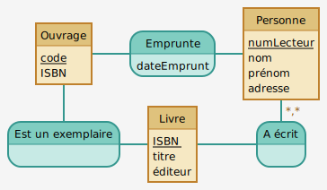
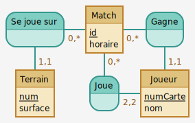

Le modèle Entités/Associations en tant que tel n’est pas au programme. Par contre il me semble utile afin de vous faire comprendre comment on modèle le réel et on parvient au final à un schéma relationnel.
L’objectif de ce chapitre n’est donc pas la conception de schémas E/A mais plutôt leur compréhension et leur interprétation.
Ce chapitre présente la première étape du processus de modélisation du monde réel. On commence par recueillir les informations à intégrer dans la base de donnée puis on les transcrit sous une forme qui nous permettra, dans le prochain chapitre, à passer au modèle relationnel (choix de la structure de la base, clés, ...).
Principes généraux
Dans un schéma E/A, on distingue les entités qui constituent la base de données, et les associations entre ces entités. Pour illustrer le besoin de cette distinction, on commence traditionnellement par illustrer les problèmes qui ne manquent pas de survenir lorsqu’on traite une base relationnelle comme un simple fichier texte, sans se soucier de lui donner une structure correcte.
Problèmes lorsque la structure de la base n’a pas été pensée
On commence généralement par créer et étudier une base se limitant à la table suivante :
| titre | annee | nom_realisateur | prenom_realisateur | annee_naissance |
|---|---|---|---|---|
| Alien | 1979 | Scott | Ridley | 1943 |
| Vertigo | 1958 | Hitchcock | Alfred | 1899 |
| Psychose | 1960 | Hitchcock | Alfred | 1899 |
| Kagemusha | 1980 | Kurosawa | Akira | 1910 |
| Volte-face | 1997 | Woo | John | 1946 |
| Pulp Fiction | 1995 | Tarantino | Quentin | |
| Titanic | 1997 | Cameron | James | 1954 |
| Sacrifice | 1986 | Tarkovski | Andrei | 1932 |
| Inglourious Basterds | 2009 | Tarantino | Quentin | 1963 |
| Reservoir Dogs | 1992 | Tarantino | 1963 | |
| Avatar | 2009 Cameron | James | 1954 | |
| Arizona Dream | 1993 | Kusturica | Emir | |
| Le Ruban blanc | 2009 | Haneke | Michael | 1942 |
Table FilmSimple.
La conception de cette base soufre de graves défauts :
Anomalies lors d’une insertion
Qu’est-ce qui distingue deux films différents ?
La conception de cette base ne permet pas de répondre à cette
question puisqu’on peut insérer deux films de même nom mais de
réalisateurs différents, par exemple.
Une bonne conception
nécessiterait un choix : Deux films peuvent-ils avoir le même
titre ? Si non, un film peut-être repéré par son titre, si oui, il
reste à définir ce qui identifiera un film.
Anomalies lors d’une modification
Les données sont incohérentes car il manque une date de naissance et un prénom. Toute modification de la table peut conduire à une telle incohérence. De plus, ces modifications doivent être effectuées plusieurs fois, sans contrôle de cohérence.
Pour finir, le Tarantino de « Reservoir Dogs » est-il le même que celui de « Pulp Fiction » ?
Anomalies lors d’une destruction
Toute destruction d’un enregistrement retire les renseignements sur le film et sur le réalisateur : supprimer l’entrée de « Volte-face » efface tout renseignement sur John Woo.
On remarque que c’est la présence de la même information à plusieurs endroits qui est à l’origine de pratiquement tous les problèmes.
Un exemple de structure de base pensée
Pour éviter les anomalies énumérées ci-dessus, il faut :
-
Être capable de représenter individuellement les films et les réalisateurs, de manière à ce qu’une action sur l’un n’entraîne pas systématiquement une action sur l’autre ;
-
Définir une méthode d’identification d’un film ou d’un réalisateur, qui permette d’assurer que la même information est représentée une seule fois ;
-
Préserver le lien entre les films et les réalisateurs, mais sans introduire de redondance.
Les deux premièrs problèmes nécessitent, pour être résolus, d’effectuer des choix. Par exemple : deux films ne peuvent pas avoir le même titre mais deux réalisateurs peuvent avoir le même nom. Afin de pouvoir identifier les réalisateurs, on doit alors leur attribuer un identifiant unique.
| titre | annee |
|---|---|
| Alien | 1979 |
| Vertigo | 1958 |
| Psychose | 1960 |
| Kagemusha | 1980 |
| Volte-face | 1997 |
| Pulp Fiction | 1995 |
| Titanic | 1997 |
| Sacrifice | 1986 |
| Inglourious Basterds | 2009 |
| Reservoir Dogs | 1992 |
| Avatar | 2009 |
| Arizona Dream | 1993 |
| Le Ruban blanc | 2009 |
Table des films
| id | nom_realisateur | prenom_realisateur | annee_naissance |
|---|---|---|---|
| 1 | Scott | Ridley | 1943 |
| 2 | Hitchcock | Alfred | 1899 |
| 3 | Kurosawa | Akira | 1910 |
| 4 | Woo | John | 1946 |
| 5 | Tarantino | Quentin | 1963 |
| 6 | Cameron | James | 1954 |
| 7 | Tarkovski | Andrei | 1932 |
| 8 | Kusturica | Emir | 1954 |
| 9 | Haneke | Michael | 1942 |
Table des réalisateurs
Dans les tables ci-dessus, les identifiants (ou clés) sont représentés en gras.
Premier progrès
Il n’y a maintenant plus de redondance dans la base de données.
Problème
Il n’existe aucun lien entre les deux tables. Comment savoir qui a réalisé « Le Ruban blanc » ?
On ajoute alors un attribut dans la table Films :
| titre | annee | id_rea |
|---|---|---|
| Alien | 1979 | 1 |
| Vertigo | 1958 | 2 |
| Psychose | 1960 | 2 |
| Kagemusha | 1980 | 3 |
| Volte-face | 1997 | 4 |
| Pulp Fiction | 1995 | 5 |
| Titanic | 1997 | 6 |
| Sacrifice | 1986 | 7 |
| Inglourious Basterds | 2009 | 5 |
| Reservoir Dogs | 1992 | 5 |
| Avatar | 2009 | 6 |
| Arizona Dream | 1993 | 8 |
| Le Ruban blanc | 2009 | 9 |
Table des films
| id | nom_realisateur | prenom_realisateur | annee_naissance |
|---|---|---|---|
| 1 | Scott | Ridley | 1943 |
| 2 | Hitchcock | Alfred | 1899 |
| 3 | Kurosawa | Akira | 1910 |
| 4 | Woo | John | 1946 |
| 5 | Tarantino | Quentin | 1963 |
| 6 | Cameron | James | 1954 |
| 7 | Tarkovski | Andrei | 1932 |
| 8 | Kusturica | Emir | 1954 |
| 9 | Haneke | Michael | 1942 |
Table des réalisateurs
Cette représentation est correcte : la redondance est réduite au minimum puisque seule la clé identifiant un réalisateur apparaît dans deux tables (on parle de clé primaire dans la cas de la table des réalisateurs et de clé étrangère dans le cas de la table des films). On peut vérifier que les anomalies relevées dans la section précédente ont disparu : on sait ce qui identifie un film, on sait ce qui identifie un réalisateur ; toute modification n’affecte que l’instance visée ; on peut détruire l’entrée d’un film sans affecter celle de son réalisateur.
Le modèle E/A : présentation informelle

Un schéma E/A réalise une abstraction de l’application étudiée, pertinente relativement aux objectifs visés et choix effectués. On distingue :
-
des entités, représentées par des rectangles, ici Film, Artiste, Internaute et Pays ;
-
des associations entre entités représentées par des liens entre ces rectangles
Chaque entité est caractérisée par un ensemble d'attributs, parmi lesquels un ou plusieurs forment l’identifiant unique (souligné sur la figure ci-dessus).
Les associations sont caractérisées par des cardinalités. La notation « 0,* » sur le lien Réalise du côté de l’entité Film signifie qu’un artiste peut réaliser 0 ou plusieurs films. La cardinalité est essentielle même si elle est forcément discutable puisque résultat d’un choix de conception.
Les cardinalités sont notées à l’aide de deux chiffres : celui de droite indique la cardinalité maximale (elle vaut généralement 1 ou *), celui de gauche indique la cardinalité minimale.
La notation « 0,1 » pour l’association Réalise indique que l’on s’autorise à ne pas connaître le réalisateur du film, « 1,1 » entre Film et Pays indique, au contraire, que l’on doit toujours connaître le pays producteur du film.
Il existe quelques raccourcis :
-
La notation « * » est équivalente à « 0,* » ;
-
La notation « 1 » est équivalente à « 1,1 ».
Le modèle
Le modèle E/A, conçu en 1976, est à la base de la plupart des méthodes de conception. La syntaxe utilisée ici est celle de la méthode UML.
Entités, attributs et identifiants
La première étape d’une conception consiste à identifier les entités tiles.
La notion d’identité est primordiale, c’est elle qui permet de distinguer les entités les unes des autres, et donc de dire qu’une information est redondante ou qu’elle ne l’est pas. Il est indispensable de prévoir un moyen technique pour pouvoir effectuer cette distinction entre entités au niveau de la base de données : on parle d’identifiant ou de clé.
Attributs
Les entités sont caractérisées par des propriétés ou attributs : le titre (du film), le nom (de l’acteur), sa date de naissance, ... Un attribut est désigné par un nom et prend ses valeurs dans un domaine énumérable, comme les entiers, les chaînes de caractères, les dates, etc.
Il est important de noter que, selon cette définition, un attribut prend une valeur et une seule. On dit que les attributs sont atomiques.
Types d’entités
Il est maintenant possible de décrire plus précisément les entités par leur type :
Le type d’une entité est composé des éléments suivants :
-
son nom ;
-
la liste de ses attributs avec (optionnellement) le domaine où l’attribut prend ses valeurs : les entiers, les chaînes de caractères, ... ;
-
l’indication de (ou des) attribut(s) permettant d’identifier l’entité : ils constituent la clé.
Un internaute est caractérisé par plusieurs attributs : son email, son nom, son prénom, ... L’émail constitue une clé naturelle puisqu’on ne trouve pas, en principe, deux internautes ayant la même adresse électronique. L’identification par nom est impossible, mais on pourrait cependant utiliser la paire $(\text{nom}, \text{prénom})$. Il est cependant conseillé d’éviter d’utiliser une telle structure de clé car elle pose des problèmes de performances et complique les manipulations SQL par la suite.
Il est possible d’avoir plusieurs clés pour un même ensemble d’entités. Dans ce cas, on en choisit une comme clé primaire, et les autres, comme clés secondaires.
Les caractéristiques d’une clé primaire devraient être :
-
Sa valeur doit apparaître de façon évidente dans le schéma E/A ;
-
On ne doit jamais avoir à ressentir le besoin de modifier cet attribut ;
-
Pour des raisons de performance, sa taille de stockage doit être la plus petite possible.
Remarque
Dans la conception choisie, dans l’exemple de la base Film, il a été décidé que deux films ne pouvaient pas avoir le même titre : ce dernier est donc un bon candidat pour être la clé de la table. Quelle clé aurait-il fallu choisir si l’on avait accepté que deux films aient le même titre ? Il aurait été nécessaire d’introduire un champ abstrait, nommé par exemple, destiné à tenir le rôle de clé.
Associations binaires
On remarque, sur la schéma ci-dessus, que :
-
certains réalisateurs mettent en scène plusieurs films ;
-
inversement, un film est mis en scène par un réalisateur, au maximum.
L’association, pour être la plus explicite possible, doit donc faire apparaître ces différences.
La cardinalité d’une association est une paire $[\min, \max]$ telle que :
-
Le symbole $\max$(cardinalité maximale) désigne le nombre maximal de fois où une entité peut intervenir dans l’association.
En général, ce nombre est 1 (au plus une fois) ou $n$ (plusieurs fois, nombre indéterminé), noté par le symbole « * ».
-
Le symbole $\min$(cardinalité minimale) désigne le nombre minimal de fois où une entité peut intervenir dans la relation. En général, ce nombre est 1 (au moins une fois) ou 0.
Les cardinalités maximales sont plus importantes que les cardinalités minimales ou, plus précisément, elles s’avèrent plus difficiles à remettre en cause, une fois que le schéma de base est constitué. Les cardinalités n’expriment pas une vérité absolue, mais des choix de conception.

L’association Réalise se lit : un réalisateur réalise zéro, un ou plusieurs films ; un film est réalisé par zéro ou au maximum un réalisateur.
Remarque
Le schéma ci-dessus ne fait pas apparaître l’entité Réalisateur mais l’entité Artiste. De plus deux associations relient ces entités.
Quelle conception a pu entraîner un tel schéma ? En réalité, un réalisateur peut être acteur dans un film ; il est donc préférable de regrouper les acteurs et les réalisateurs dans type d’entité plus
général : Artiste. L’association Réalise ne peut donc plus modéliser le lien entre les entités Film et Artiste ; il est alors nécessaire de créer l’association Joue. On obtient le schéma ci-dessous :
Remarque
Dans le cas d’associations avec des cardinalités multiples de chaque côté, on peut être obligé de lier des attributs à une association (par exemple l’association Joue a pour attribut le rôle). En effet, un attribut ne pouvant prendre qu’une et une seule valeur, on ne peut pas associer l’attribut rôle à l’entité Artiste puisqu’un acteur peut jouer dans plusieurs films (il existe fort peu de chances qu’il tienne toujours le même rôle !). Seules les associations ayant des cardinalités multiples de chaque côté peuvent porter des attributs.
Une association étant définie par un ensemble de couples d’entités, on peut donc se demander comment la caractériser.
En pratique, cette définition est trop contraignante car on peut vouloir autoriser deux entités à être liées plus d’une fois dans une association. Par exemple, un internaute peut être amené à noter plusieurs fois un film, en conservant l’historique de ces notations. Une association binaire entre Internaute et Film est impossible : on ne peut définir qu’un seul lien entre un film donné et un internaute donné !
Pour résoudre ce problème, il est nécessaire d’introduire des types fictifs et des associations multiples, ... ce que nous ne ferons pas dans ce cours.
Exercice
Exercice 1 : choix d’un identifiant
On considère l’entité ci-après, qui décrit des salles de cinémas. Les attributs de cette entité sont les suivants :
- nom de la salle ;
- nom du cinéma ;
- ville du cinéma ;
- nombre de places ;
- taille de l’écran.
Que peut-on proposer comme identifiant (clé) pour cette entité ?
Exercice 2 : identification des entités et des associations
-
On veut modéliser l’activité de vente de billets pour un théâtre. Quelles entités et quelles associations pourrait-on créer ?
-
Proposer des attributs et les identifiants (clés) pertinents pour décrire ces entités et ces associations.
Exercice 3 : description du monde réel à partir des cardinalités
On donne le schéma E/A d’un séminaire.

Quelle description peut-on faire du lien entre les différentes entités à partir des cardinalités ?
Exercice 4 : cardinalités
On donne le schéma E/A d’une bibliothèque.

Quelles questions faut-il poser aux utilisateurs de la base de données pour déterminer les cardinalités des associations ? Proposer une réponse à ces questions et en déduire les cardinalités pour chaque entité.
Exercice 5 : tournoi de tennis
Le schéma suivant représente des rencontres dans un tournoi de tennis :

-
Peut-on jouer des matchs de double ?
-
Un joueur peut-il gagner un match sans y avoir participé ?
-
Peut-il y avoir deux matchs sur le même terrain à la même heure ?
-
Connaissant un joueur, peut-on découvrir sur quels terrains il a joué ?